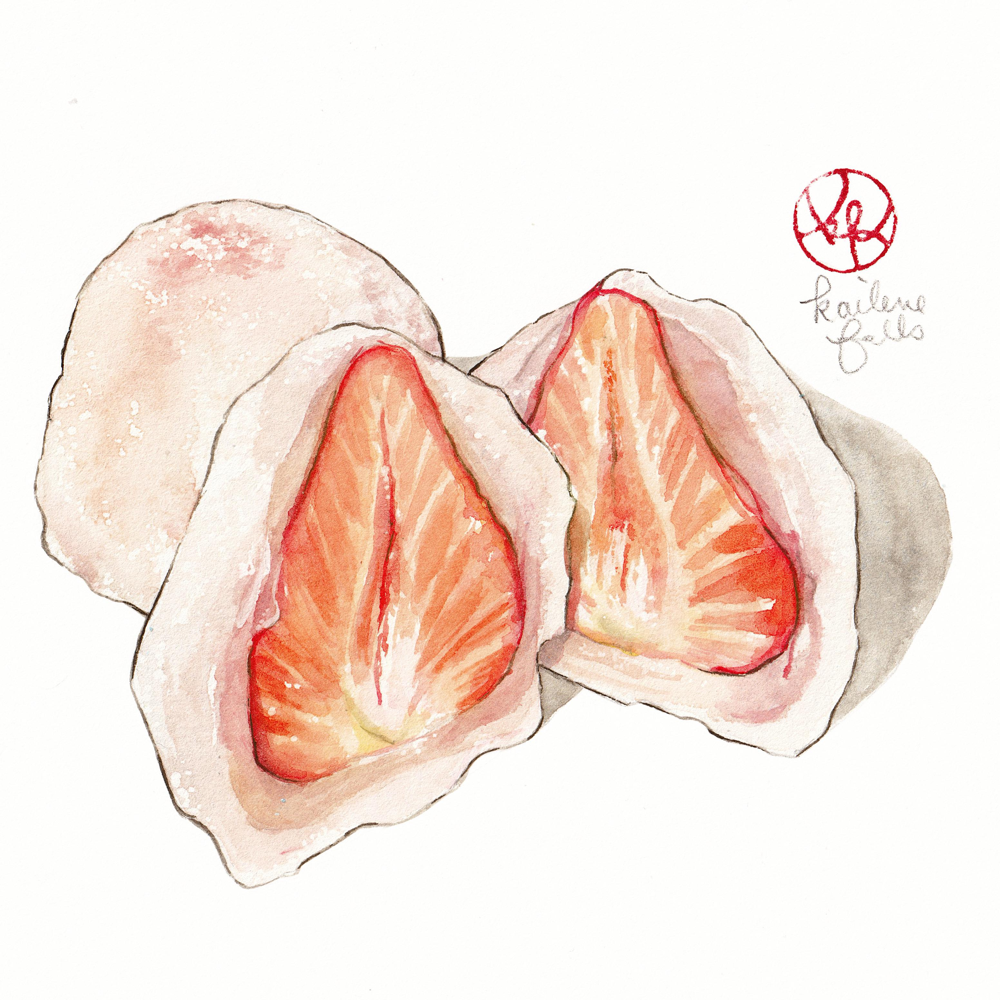

Daifuku
A classic Japanese mochi

Ingredients
For the cake
- Mochiko flour
- Sugar
- Water
- Strawberries
- Anko
- Potato/Corn starch
Method
- Combine mochiko flour with sugar and water
- Stir the mixture on the stove until you get a sticky texture
- Place the ready mixture on a plate covored with potato/corn starch . Leave to cool
- When the mochi is cooled down you can make balls out of it
- Spread the balls in to a circle shape like a plate
- Place anko inside and then put the strawberry
- Close the mochi so no anko and strawberry will be visible and you are done